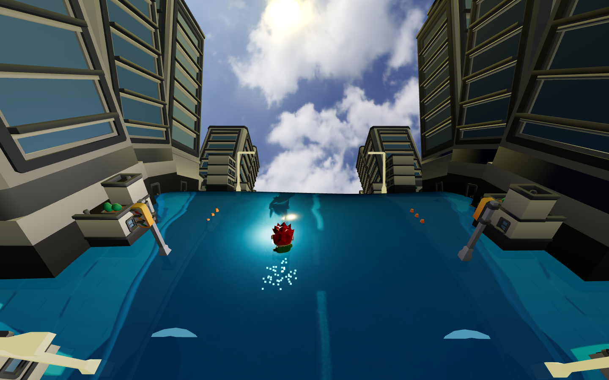
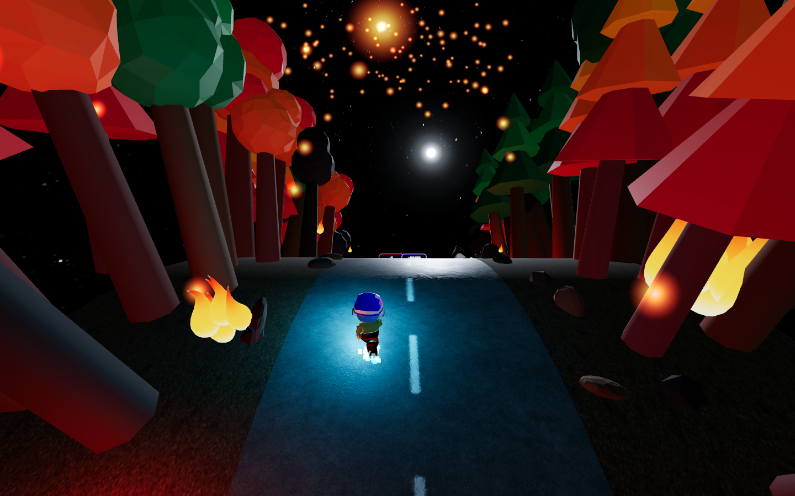
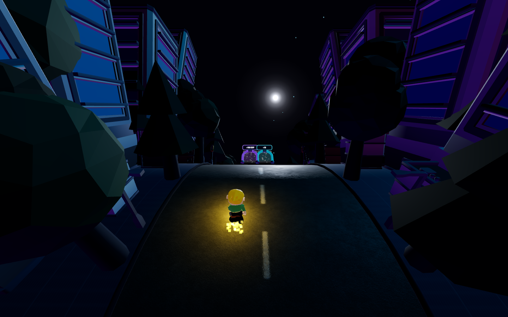

Bangun pasukan, pilih elemen, dan hadapi final boss setelah 60 detik berlari.
Setiap arena memakai lingkungan, avatar awal, dan boss dari proyek ini.

ARENA 01Jalan kota yang dilanda banjir. Mulai dengan pasukan Fire dan hadapi monster sampah.
FIRE · MONSTER SAMPAH
ARENA 02Lari melewati hutan yang terbakar. Mulai dengan pasukan Water dan kalahkan monster lava.
WATER · MONSTER LAVA
ARENA 03Lintasan kota malam futuristik. Mulai dengan pasukan Electric dan lawan mecha robot.
ELECTRIC · MECHA ROBOT